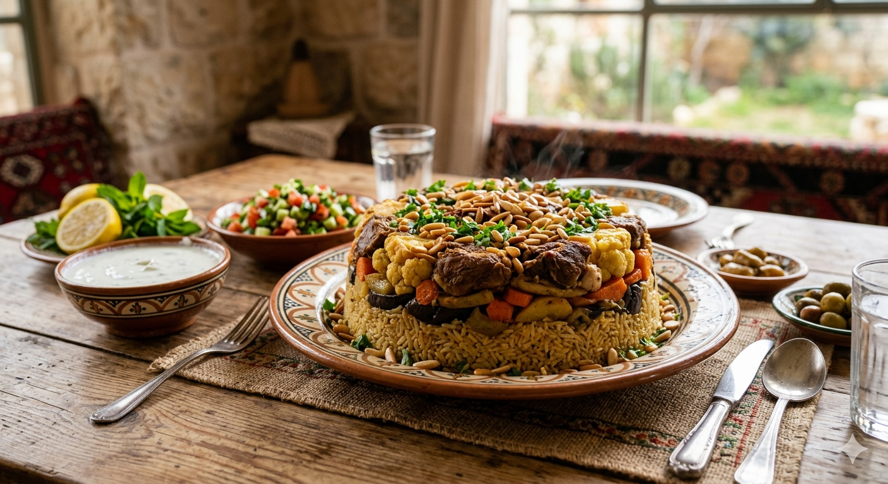
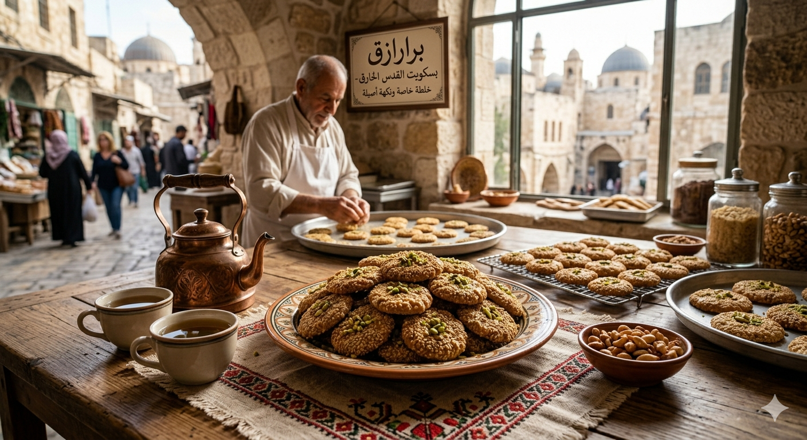
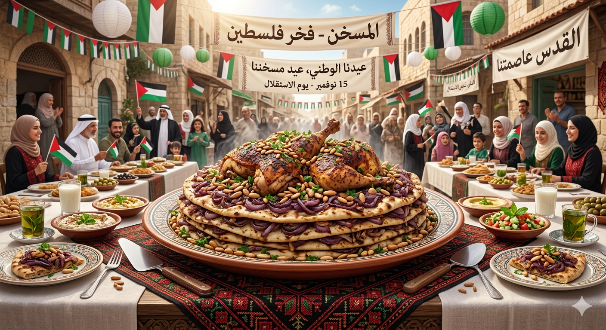
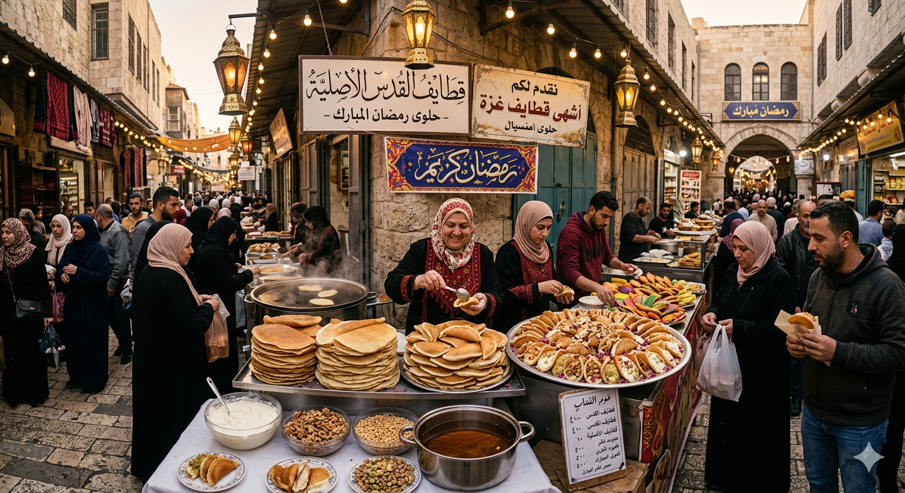
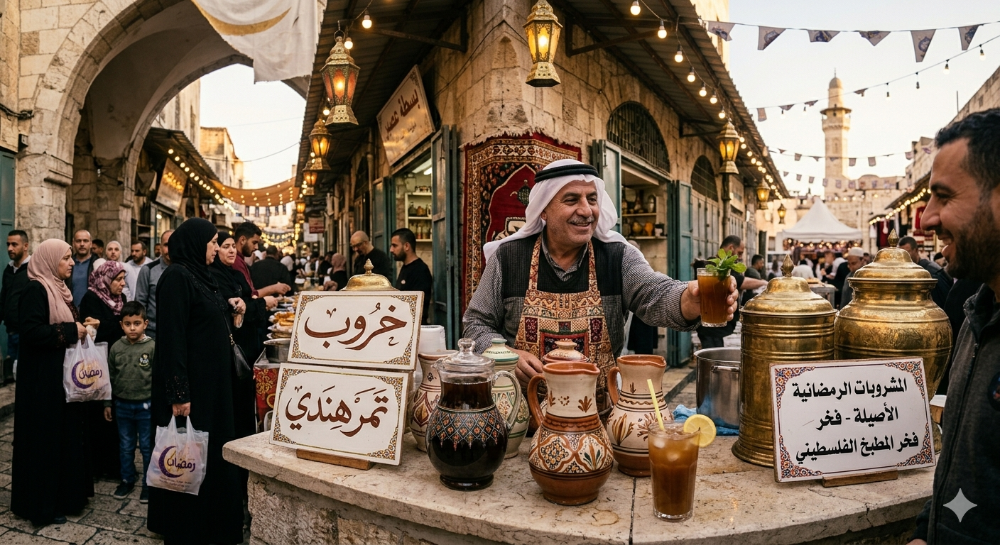
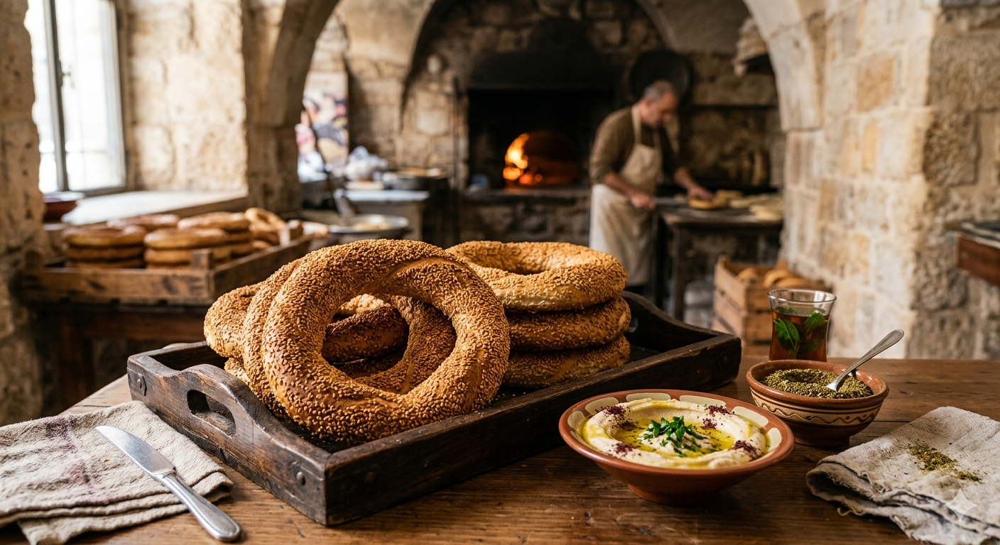

مدينة القدس
"مطبخ مدينة القدس يتميز بنكهة فريدة تمزج بين عراقة التاريخ وأصالة الوصفات المتوارثة التي تفوح بها أزقة البلدة القديمة."

المقلوبة طبق "النصر"
ولدت هذه الأكلة في القدس. يقال ان صلاح الدين الأيوبي أعجب بها عند فتحه المدينة، و سماها كذلك لأنها تقبي رأسا على عقب لتظهر داخلها الذهبي. انها الطبق الأكثر رمزية في المقاومى الفلسطينية. يذكر أن السلطات الاسرائيلية كانت تستجوب الفلسطينيين لمجرد طهيها. تتكون من طبقات الأرز و الخضار و الدجاج أو اللحم.

البرازق"بسكويت القدس الخارق"
هو أكثر من مجرد بسكويت بالسمسم، إنه أحد معالم القدس الشرقية، فهو لا يخبز إلا في أفران الحطب في البلدة القديمة، و يفوح منه رائحة العراقة. يعتبر وجبة أساسية في رمضان، و يصر المقدسيون على شرائه.

المسخن "العيد الوطني لفلسطين"
يطلق عليه وصف "ملك المطبخ الفلسطيني"، و هو الطبق الأكثر حضورا في المناسبات. يتكون من الدجاج المشوي مع البصل و السماق و الصنوبر، و يوضع فوق خبز الطابون. كل قضمة منه هي احتفال بالأرض.

القطايف "حلوى رمضان"
الفطائر الرقيقة المحشوة بالجبنة البيضاء أو الجوز و القشطة، و تغمس بالقطر. انها ضيف عزيز لا يفارق المائدة المقدسية خلال شهر رمضان المبارك، و تباع في أكشاك خاصة تنتشر في الأحياء.

المشروبات الرمضانية
الخروب و التمر هندي. هذه المشروبات التقليدية هي أيقونة الشهر الفضيل في القدس. تشتهر بأنها مرطبات منعشة بعد يوم طويل من الصيام، و تذكرنا بأصالة المطبخ الفلسطيني.

الكعك المقدسي: خبز القدس الأيقوني
خبز بالسمسم لا يخبز بنفس الطعم إلا في أفران القدس القدسمة. يعتبر وجبة متكاملة مع الحمص أو الزعتر، و هو سفير المدينة الذي لا يعود زائر إلا و يحمله معه. رمز للهوية الفلسطينية لم يستطع الاحتلال سرقتها.